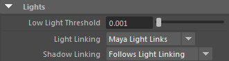

请参见《Arnold 用户手册》中的渲染设置

这些设置针对 Arnold 中的灯光求值方式提供了一些常规的控制。
启用后，将忽略各个灯光的灯光采样设置，并且仅使用指定数量的采样计算所有灯光的总体贡献。
它不适用于环境、带方向性的灯光、体积和 GPU 渲染。
您可以设置 _low_light_threshold_，以便在灯光量低于特定值时，允许 Arnold 跳过灯光采样求值，从而加快渲染速度。
通常来说，场景中的所有灯光都可以为场景中的所有对象提供照明。但是，在 Maya 中，您也可以覆盖此行为，具体做法是将灯光与特定对象“链接”起来，让某一灯光只为它所链接的对象提供照明。默认情况下，MtoA 设置为沿用 Maya 场景中定义的任何灯光链接，但您也可以覆盖此行为。在 MtoA 中，您还可以单独控制多个阴影是否遵循相同的行为方式。
关闭灯光链接（“无”(None)），或使用 Maya 灯光链接（“Maya 灯光链接”(Maya Light Links)）。
实例化灯光时，请确保将“灯光链接”(Light Linking)设置为“无”(None)。否则，实例化的灯光将不会渲染。
阴影链接可设置为与灯光链接相同的设置（“沿用灯光链接”(Follows Light Linking)），也可以明确指定阴影链接应该关闭（“无”(None)）或使用 Maya 的阴影链接（“Maya 阴影链接”(Maya Shadow Links)）。